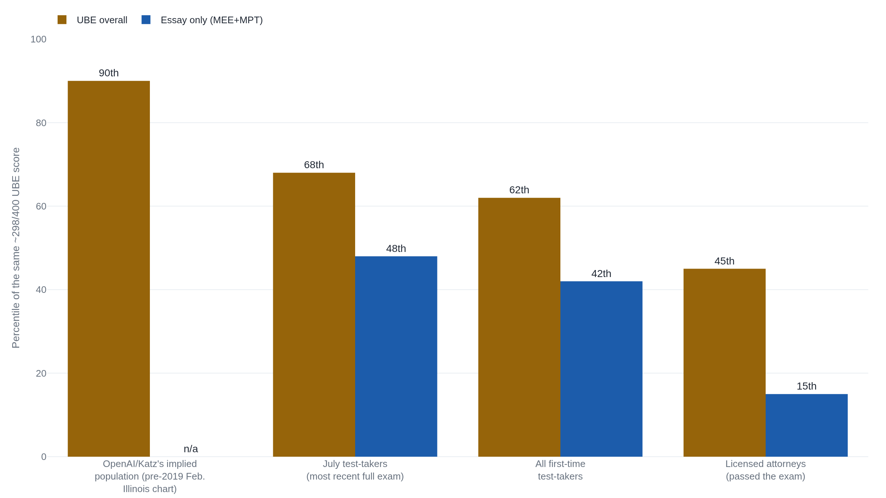

GPT-4's 90th-percentile bar score traces to an uncited footnote
OpenAI's "90th percentile" rests on two sentences in a co-author's footnote that name no chart and no comparison group. Recomputed against attorneys who actually passed the exam, the same 298-point score lands near the 45th percentile, and the 15th on the essay questions closest to real legal work.
Why this matters
A benchmark score means only as much as the group it was measured against. In March 2023, OpenAI reported that GPT-4 scored in the 90th percentile on the Uniform Bar Exam, and the figure spread as evidence that a machine could write like nine out of ten working lawyers. Neither the researchers who computed that percentile nor the exam's own examiners ever named the hundred test-takers behind it. This lesson follows GPT-4's actual bar-exam score, 298 out of 400, through four different comparison groups picked by two sets of researchers on opposite sides of the same dispute, and shows one raw number landing anywhere from the 90th percentile to the 15th, depending on who counts as the other ninety-nine. What a percentile is built to answer, and what "90th percentile on the bar exam" was heard to answer, turn out to be two different questions.
- 01
- o1 beat GPQA's recruited PhDs, not its own expert ceiling: the same reference-group problem in a different benchmark, a score read against the wrong human baseline.
- 02
- NCBE, "UBE Scores": how the exam that produced GPT-4's raw score is actually weighted and reported.
A 298 out of 400, and "the top 10 percent"
OpenAI's GPT-4 Technical Report lists the model's exam results in one table, and the Uniform Bar Exam entry reads: 298 out of 400, about the 90th percentile.1 The same table puts GPT-3.5's score at 213, about the 10th percentile, and the report's body text states plainly that GPT-4 "passes a simulated version of the Uniform Bar Examination with a score in the top 10% of test takers."1 Two sentences turned the largest professional licensing exam GPT-4 had yet taken into proof, for many readers, that it could write like a working lawyer.
A percentile only means something once you can name whose scores it was measured against. The organization that actually writes and scores the Uniform Bar Exam, the National Conference of Bar Examiners, does not publish an official UBE percentile at all. Its own statistics report results only as the share of test-takers landing in a given 10-point score band, never as a percentile rank.2 So the "90th percentile" in OpenAI's report cannot be the exam board's own number. It has to come from somewhere else.
It comes from a footnote. GPT-4's bar-exam score was not computed by OpenAI. It was computed by Daniel Katz, Michael Bommarito, Shang Gao, and Pablo Arredondo, a team of legal-technology researchers who administered a simulated exam to GPT-4 themselves. They reported a combined score of 297 points, one below the 298 OpenAI later cites. A footnote on that same result notes that the best-performing prompt and settings would push the score "to 298 or higher."3 In the very next footnote, Katz and his coauthors add the two sentences that would become "90th percentile." The footnote reads: "Using a percentile chart from a recent exam administration (which is generally available online), ChatGPT would receive a score below the 10th percentile of test-takers while GPT-4 would receive a combined score approaching the 90th percentile of test-takers."3 That is the entire textual basis for the claim: two sentences, no chart named, no citation attached. "Approaching" the 90th percentile hardened, one report later, into a flat "top 10% of test takers."13
The chart nobody named
Eric Martínez, an MIT PhD student and Harvard-trained lawyer with no stake in either paper, went looking for the chart Katz's footnote gestures at.4 He did not have to guess at the method. Because the exam board releases no percentiles of its own, bar-prep advisers already point test-takers toward one specific substitute. One exam-prep company's guide puts the workaround directly: "you can figure out your approximate percentile by looking at your Illinois bar exam percentile equivalents."5 Martínez traced the number to exactly that kind of chart, a conversion table built before 2019 from the Illinois Bar Exam's February administration. On that chart, a score near 298 to 300 does sit close to the 90th percentile.4
The February sitting of a state bar exam is not a random sample of everyone who takes the test. Most states, Illinois included, offer the exam twice a year, and the February sitting is dominated by people retaking it after failing the previous July. In the February 2021 Illinois exam, 284 test-takers were sitting for the first time, against 426 who were repeating.4 The pass rates make the gap concrete. In February 2023, 43 percent of Illinois test-takers passed, against 68 percent that July. Among just the first-time takers, February's pass rate was 62 percent, against 35 percent for people repeating the exam.4 A chart built from that pool sets its 90th percentile against a group already shifted toward people who have failed the exam once. The same pattern shows up in current national data, not just a single state's 2019 chart: NCBE's own 2024 statistics put the average UBE score for the February sitting at 262.0, against 284.7 that July.6
The New York State Bar Association, reporting on a presentation Martínez gave to its members, summarizes the objection cleanly: "the AI was compared against February test-takers, who are predominantly repeat test-takers with lower average scores." Martínez argued that the more defensible comparisons run against first-time test-takers, or against people who actually passed the exam.7
One score, four percentiles
Recompute GPT-4's same, roughly 298-point score against those better-chosen populations, and the percentile keeps moving. Martínez's own results table gives four figures for the identical raw score. Against the pre-2019 Illinois chart, the population Katz's footnote implicitly compares to, GPT-4 sits about the 90th percentile. Against everyone who sat the July exam, the 68th. Against first-time test-takers only, the 62nd. Against test-takers who actually passed the exam, meaning licensed or license-pending attorneys, the 45th.4

One inconsistency in that same source is worth flagging directly. Martínez's own abstract and discussion round the attorney comparison up to "approximately 48th percentile," and repeat that rounder figure more than once. His results table and the text right below it, though, both give 45th for that identical comparison, and the gap between his stated 45 and his repeated 48 is never resolved anywhere in the paper, in either the preprint or the version published in Artificial Intelligence and Law. The number his own table actually computed is 45th; this lesson uses that figure, not the summary that rounds it up.4
A Live Science article summarizing Martínez's findings reports that GPT-4 "scored in the 69th percentile of all test takers and in the 48th percentile of those taking the test for the first time." It then separately says its essay score "landed in the 48th percentile of all test takers and in the 15th percentile of those taking the test for the first time."8 Martínez's own table assigns 48th to July test-takers' essay score and 15th to attorneys who passed, not to first-time takers at all. A careful outlet, writing specifically to correct one percentile-framing error, introduced a second one by losing track of which population each number belonged to. No single figure here is untrustworthy. A percentile detaches from its population the moment someone repeats it without repeating the group.
The number closest to a lawyer's desk
The Uniform Bar Exam mixes two very different kinds of questions. The Multistate Bar Exam is 200 multiple-choice questions, and it is the section GPT-4's overall score leans on most. 157 of GPT-4's 297 points came from an MBE accuracy of 75.7 percent, a result Martínez independently replicated at 75.6 percent.34 The Multistate Essay Exam and Multistate Performance Test ask for something closer to what a working lawyer actually produces: written analysis applying law to a set of facts, and a simulated legal task like drafting a memo. Picking the right multiple-choice answer and producing usable legal writing are different skills, and the bar exam scores both, then adds them into one number.
Split the combined score by section, and the essay-only percentile is the sharpest figure in the entire comparison. Against July test-takers, GPT-4's essay score sits at the 48th percentile. Against first-time test-takers, the 42nd. Against attorneys who passed, the 15th.4 Fifteen out of every hundred passing lawyers wrote worse than GPT-4 did on that section. Eighty-five wrote better.
That figure rests on how the essays were graded, and Martínez's paper raises a real limitation in its own scoring method, not only in OpenAI's claim. No formally trained bar-exam grader scored these essays. Katz and his coauthors compared GPT-4's answers to a set of "representative good answers" published by the Maryland bar examiners, answers that Maryland's own examiners describe as neither necessarily passing nor necessarily perfect, and no second grader checked the first grader's scores against a shared standard.4 Martínez tested how much that grading choice matters: if GPT-4's essay score had come in just nine points lower, its standing against attorneys who passed would fall below the 5th percentile.4 A score that close to its own grading method's margin is not yet a settled fact about the model. It is a number worth exactly as much as the reference group and the grading rule behind it, named together, wherever it is repeated.
The takeaway
A percentile only ever states a comparison. OpenAI's 90th percentile never named the population GPT-4 was being measured against. Katz and his coauthors' own footnote gave OpenAI its 90th percentile with no chart named and no citation attached, a phrase that traced, eventually, to a pre-2019 Illinois exam chart weighted toward people repeating the test after already failing it once. Recompute the same 298-point score against test-takers who sat the exam once, in July, and it drops to the 68th percentile. Against attorneys who actually passed, it drops again to the 45th. Split off just the essay questions, the part of the exam closest to a lawyer's actual writing, and passing attorneys beat GPT-4 eighty-five times out of a hundred. None of these numbers is fake. Each is the correct answer to a different question, and the question a percentile answers is always: against whom? A claim that skips naming its reference group has not yet said anything anyone can check.
- 01
- Eric Martínez, "Re-evaluating GPT-4's Bar Exam Performance": the full re-analysis, including the score-to-percentile lookup table across every ten-point band from 220 to 370.
- 02
- OpenAI, "GPT-4 Technical Report": the original claim, in the same table as roughly thirty other academic and professional exams.
Sources
- OpenAI · GPT-4 Technical Report, arXiv:2303.08774 (2023)
- NCBE (National Conference of Bar Examiners) · UBE Scores
- Katz, Bommarito, Gao & Arredondo · GPT-4 Passes the Bar Exam, Philosophical Transactions of the Royal Society A, DOI:10.1098/rsta.2023.0254 (2024)
- Eric Martínez · Re-evaluating GPT-4's Bar Exam Performance, Artificial Intelligence and Law, DOI:10.1007/s10506-024-09396-9 (2024)
- JD Advising · UBE Percentiles: What percentile did I score in?
- NCBE · The Bar Examiner, 2024 Statistics: The Uniform Bar Examination
- David Alexander · Why ChatGPT-4's Score on the Bar Exam May Not Be So Impressive, New York State Bar Association (16 April 2024)
- Ben Turner · GPT-4 didn't ace the bar exam after all, MIT research suggests, Live Science (31 May 2024)